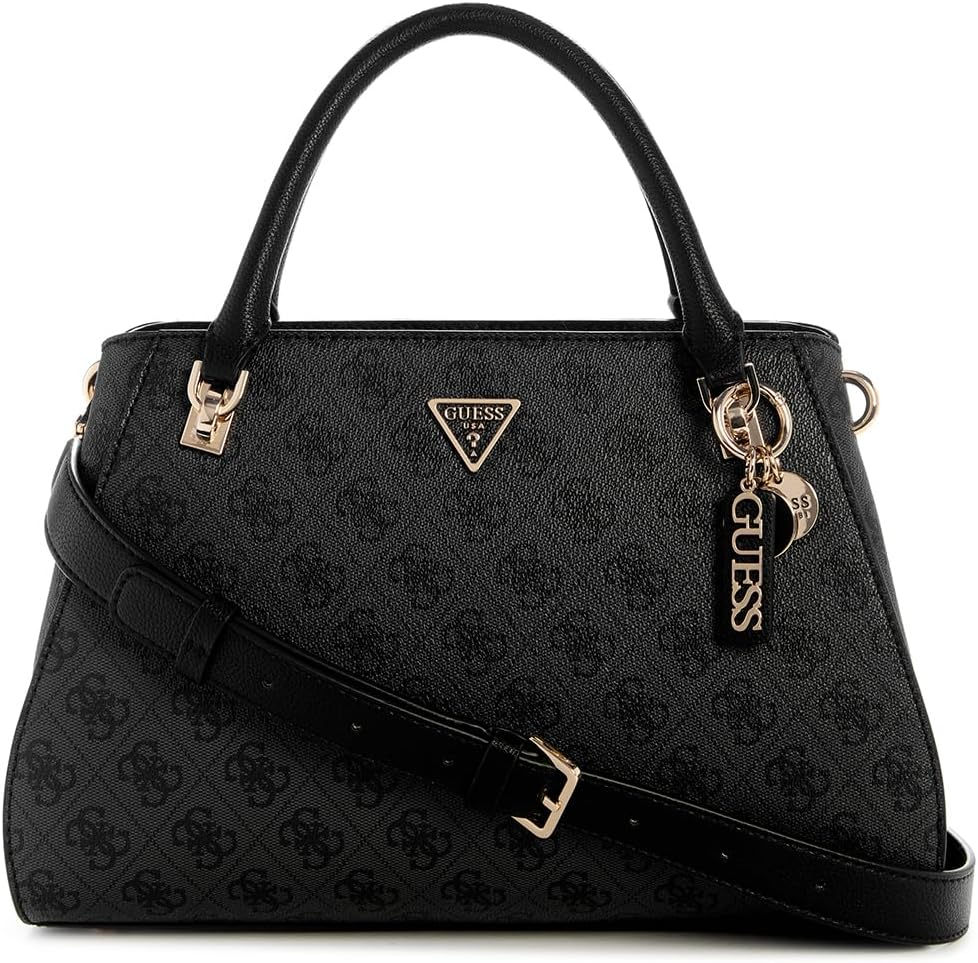

GUESS Noelle II Luxury Satchel: el bolso del día 77
El calendario no pregunta si tienes ganas. El bolso de hoy es el GUESS Noelle II Luxury Satchel. No es un capricho de escaparate: es el que acompaña irse con todo ordenado dentro, con 4,8★ de nota media y 135 valoraciones que respaldan la decisión.

Un bolso no cambia tu día. Cambia la manera de entrar en él: con lo que necesitas, sin lo que sobra y con la certeza de que otras 135 personas ya hicieron la misma elección antes que tú. Lo que más repiten sus compradoras: calidad.